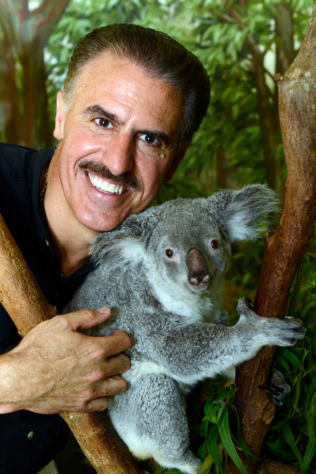

Ron Magill Conservation Endowment Fund

Dedicated to animal conservation. It's time to invest in our futures and do our part to help those around us. The Ron Magill Conservation Endowment Fund focuses on three different causes. First, is an annual $5,000 scholarship to a graduate student in the Department of Wildlife Ecology and Conservation at the University of Florida. Additionally, the fund has created a sponsorship of Anatolian Shepherd dogs in South Africa through the nonprofit Cheetah Outreach. Lastly, a harpy eagle conservation project in Panama, which resulted in Panana choosing the harpy eagle as the official bird of Panama.